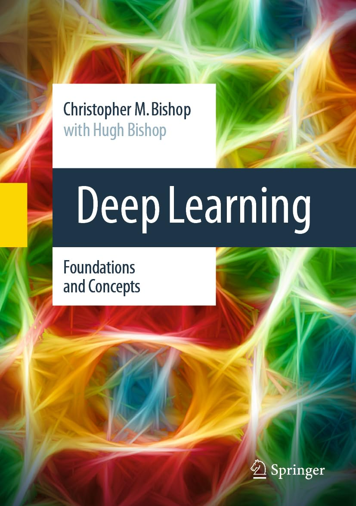
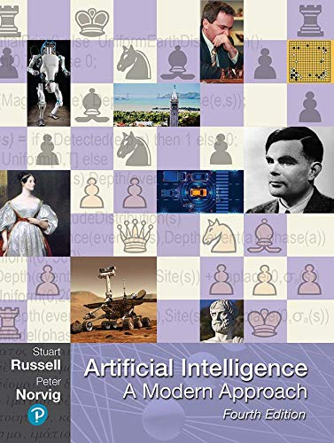

Intelligence artificielle
Vidéos
Livres

Pattern recognition and Machine Learning
Christopher M. Bishop
Springer-Velarg New York Inc.
2006

Deep Learning
Foundations and concepts
Christopher M. Bishop
Springer International Publishing AG
2024
Introduction to machine learning
Alex Smola ; S.V.N. Vishwanathan
Cambridge University Press
2008
Deep Learning
Ian Goodfellow ; Yoshua Bengio ; Aaron Courville
The MIT Press
2016

Artificial Intelligence
A Modern Approach
4
Stuart Russel ; Peter Norvig
Pearson
2021
Livres et cours html
A Mathematical Framework for Transformer Circuits Neural Networks: Zero to Hero Neural Networks and Deep LearningRessources
Collection of models and data sets MNIST database
Data set of handwritten digits Articles traitant des
« mauvaises » instructions.
Ressources
Évaluation de l’intelligence de Chat GPT 4 The AI Scientist: Towards Fully AutomatedOpen-Ended Scientific Discovery Optimal Policies
Tend To Seek Power Open Problems and Fundamental Limitations of
Reinforcement Learning from Human Feedback AI deception: A survey of examples,
risks, and potential solutions Human-level play in the game
of Diplomacy by combining language
models with strategic reasoning